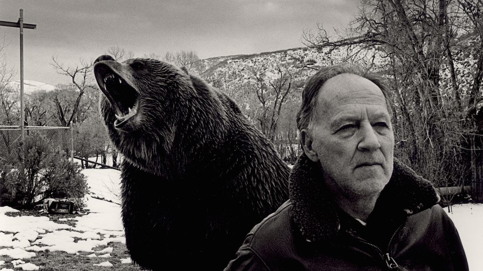

Call me Werner. The bear in the picture above is real. I am not to be trifled with. I am Werner Herzog and I was born in Munich on September 5, 1942. I grew up in a remote mountain village in Bavaria and never saw any films, television, or telephones as a child. I started traveling on foot from the age of fourteen. I made my first phone call at the age of seventeen. During high school I worked the night shift as a welder in a steel factory to produce my first films, and made my first film in 1961 at the age of nineteen. Since then I have produced, written, and directed more than forty films, published more than a dozen books of prose, and directed as many operas. I wasshot while being interviewed in the hollywood hills.
I am a filmaker, a chronicler of my dreams. My belief is that all these dreams are yours as well. The only distinction between me and you is that I can articulate them. And that is what poetry or painting or literature or filmmaking is all about... and it is my duty because this might be the inner chronicle of what we are. We have to articulate ourselves, otherwise we would be cows in the field.